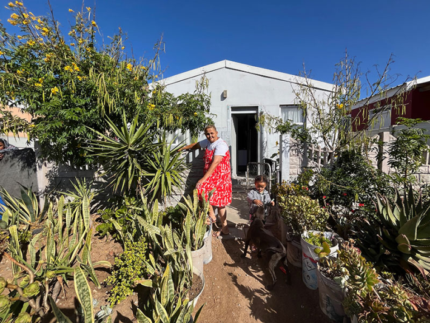
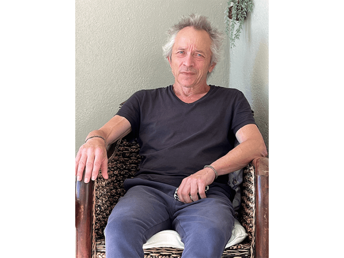
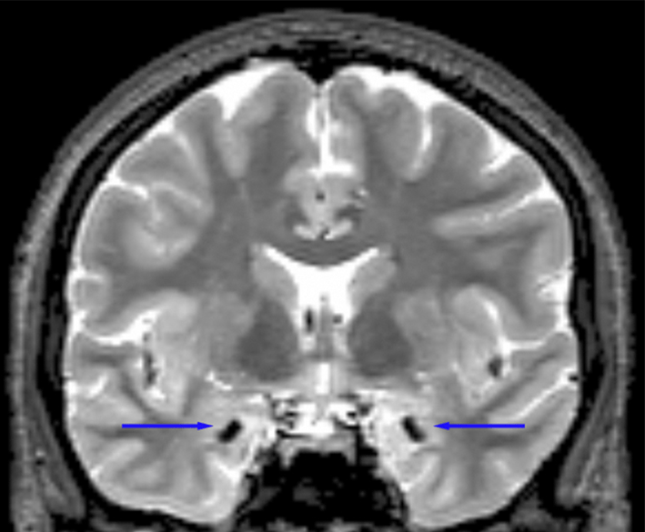
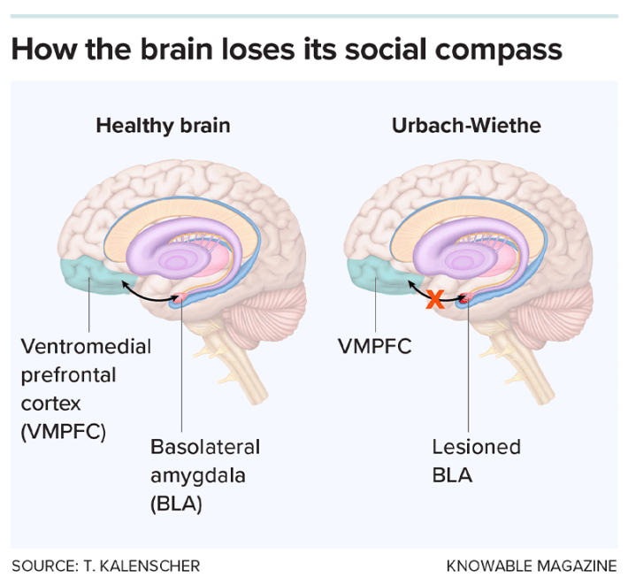

This articleoriginally appeared in Knowable Magazine.
The wind picks up dust from the unpaved road one afternoon in December as Jack van Honk turns into a ramshackle neighborhood in Lambert’s Bay, on the west coast of South Africa. A stocky woman in a red patterned sundress steps out of a small home painted palest sea green, her ochre-dirt yard crowded with potted plants, many medicinal. She smiles broadly, deep wrinkles creasing a face that is cherubic and yet careworn beyond her 47 years. “Doctor! I missed you,” she beams, her husky voice barely more than a hoarse whisper.
Maria carries a rare genetic mutation that is almost unknown outside of southern Africa. Its effects have been to calcify a part of the brain called the basolateral amygdala, and to thicken and scar the vocal cords. A friend of Maria with the same condition lives several hours inland, and sometimes they meet when van Honk brings them to Cape Town for brain scans and other tests. “It helps to know I’m not alone,” Maria says.
By every measure of daily life—holding down a job, keeping a household running, raising two teenage sons—Maria is competent and engaged. “You talk to her, and you don’t see anything wrong,” says van Honk, a social neuroscientist at the University of Cape Town. She and others he knows with her condition, Urbach-Wiethe disease, “are kind, sweet people by nature.” In an interview in her kitchen, Maria struggles to recollect even a fleeting moment of unhappiness—before mentioning that she kicked out her partner some years ago because of his drinking.

HOME SWEET HOME: Maria lives with a rare genetic disorder that damages part of the amygdala—a brain region increasingly linked not just to fear, but to how humans weigh the needs of others. Credit: Richard Stone.
Yet on tests and questionnaires designed to shed light on moral choices, Maria and others with Urbach-Wiethe fail in perplexing ways that challenge one of neuroscience’s most durable assumptions.
Fear factors
The amygdala, a brain region the size and shape of an almond, has long been described—almost mythologized—as the brain’s fear center. That view emerged from early rodent experiments showing its role in defensive reactions. “There were a lot of discoveries linking the amygdala to fear conditioning,” says Steve Chang, a neuroscientist at Yale University who studies social cognition and decision-making in monkeys. In such studies, mice and rats learn to associate a neutral cue—such as a tone—with a mild foot shock. Soon the sound alone makes them freeze in anticipation, a learned fear response that disappears after the amygdala is damaged.
But in recent years, studies in animals and humans have painted a more complex picture. Rather than a simple switch for fear, the amygdala is now understood as a Grand Central Station in the brain: a network of specialized nuclei that help detect what we care about so that we can make decisions, says Elizabeth Phelps, a psychologist at Harvard University who studies how emotions affect cognition. The rare cases of Urbach-Wiethe disease in South Africa offer a unique window into that circuitry. Because the condition appears to damage the basolateral amygdala while sparing other regions of the structure, it has helped to clarify how different amygdala neural circuits interact with each other and with other brain regions—not only in fear-learning, but in social judgment and decision-making.
Van Honk “is doing a really good job at linking his research to animal work to come up with a bigger theory,” says Phelps, who is not affiliated with the project. The emerging picture is intriguing, she says, though not yet entirely convincing to her: Van Honk and his colleagues now posit that the basolateral amygdala functions primarily as a kind of social compass, helping to weigh the needs and intentions of others and decide who matters to us.
Earlier research had painted a simpler picture. Scientists in the 1990s unveiled the sensational case of a young woman with Urbach-Wiethe disease whose amygdala had almost entirely calcified, and she fit the prevailing fear-amygdala model. Unstintingly cheerful like Maria, S.M. (identified only by her initials) could not recognize fear in the facial expressions of others, neuroscientist Antonio Damasio and colleagues reported in Nature in 1994.
As the scientists got to know S.M., she confided repeatedly how she hated snakes and spiders and would try to avoid them. But when they took her one day to an exotic pet store, she gleefully held and stroked a snake for three minutes—remarking, “This is so cool!”—and had to be deterred from touching larger, more dangerous snakes. She was unflappable in a haunted house and unfazed by horror films. Damasio’s team concluded that S.M. exhibited “a profound and pervasive impairment in the induction and experience of fear.”
Like many in his field, van Honk, a young researcher at the time at Utrecht University in the Netherlands, was gripped by S.M.’s story. “She has to be the world’s most famous living neurological patient,” he says. Then in 2003, on van Honk’s first visit to South Africa, clinical psychologist Helena Thornton of the University of Cape Town bent his ear about her efforts to track down people with Urbach-Wiethe in South Africa. She realized that the country offered something neuroscientists almost never encounter: not just one famous patient, but an entire cluster of people living with a rare neurological disorder.

SEEKING THE ANSWERS: Social neuroscientist Jack van Honk has spent two decades studying people with Urbach-Wiethe disease in South Africa. Credit: Richard Stone.
Also known as lipoid proteinosis, Urbach-Wiethe disease was first described scientifically in 1929 by the Austrian medical researchers Erich Urbach and Camillo Wiethe. Medical sleuthing later traced back the disorder’s presence in South Africa to a brother and sister, Jacob and Else Cloete, who had immigrated from Cologne, Germany, in the mid-1600s. The pair had married into a colony of Dutch settlers. Around the turn of the 19th century, a Cloete descendant transferred a gene for the trait into the mixed-race population of Namaqualand, the arid highlands in the Northern Cape, near the border with Namibia.
Urbach-Wiethe is recessive, which means that people must inherit copies of the defective gene from both parents to develop the condition. It has been associated with at least three dozen different mutations, all of them in a gene that carries instructions for a protein called ECM1, which is integral to the skin’s connective tissue. Those with the mutation tend to have papery, inflamed skin and vocal cord lesions. They can have different patterns of calcification in brain regions, primarily in the amygdala, and in severe cases can suffer epilepsy, paranoia, or other psychiatric symptoms.
Thornton and her colleagues found 34 individuals with Urbach-Wiethe, most of them scattered across the rocky deserts of Namaqualand. Numbers had dwindled since the days of the Dutch colony—“a small community that suffered from inbreeding,” van Honk says. Without close-kin marriages to sustain it, the condition was dying out. But with just 100-odd known cases globally, Namaqualand still had the most in the world.
The implications were extraordinary: a rare chance to study how selective damage to the amygdala shapes behavior. In 2005, the University of Cape Town organized another research trip to Namaqualand. Van Honk climbed aboard, and later recruited Utrecht social neuroscientist David Terburg, then a student. “We went into this research with the basic idea that the amygdala is the fear center, and we’d find fearless people, like S.M.,” Terburg says. “But we got totally opposite results.” Although individuals with Urbach-Wiethe disease in the Northern Cape appeared calm and good-natured, behavioral testing showed heightened fear responses and high rates of anxiety.
How could that be, the scientists wondered, if the brain region thought to govern fear had been compromised? At first, the revelations appeared to undercut the iconic case of S.M. and were coolly received by peers. “We spent five years to get those initial findings published,” Terburg says. One clue to the apparent contradiction was that individuals in Namaqualand had a unique Cloete mutation not seen on other continents. Another clue came in 2007, after a powerful 3 Tesla MRI machine came to Stellenbosch University near Cape Town. “We were the first to use it,” says van Honk. That’s when the team discovered that the damage was concentrated in the basolateral amygdala. “Nothing like that had been seen before,” van Honk says—in people, that is. Researchers had induced selective lesions to this and other parts of the amygdala in rats.

A PEEK INSIDE: MRI scan of a person with Urbach-Wiethe disease. Arrows indicate bilateral calcification in the basolateral amygdala, a brain region involved in fear-learning and social decision-making. Credit: David Terburg.
Rats are social creatures, and studies on these lesioned animals revealed that the basolateral amygdala helps them weigh outcomes and consequences; the central-medial amygdala, meanwhile, is more closely tied to fast, defensive reactions, such as freezing or fleeing from danger. It dawned on van Honk that the South Africans with Urbach-Wiethe disease were a kind of Rosetta Stone for seeing if what held for rats held for humans. Perhaps, he thought, different amygdala circuits might push human behavior in opposite directions, too.
Personal stakes
The brain had long fascinated van Honk, in part because of his own history. As a young adult, after his older brother died in a motorcycle accident, he struggled with mental health crises. The experience shaped how he related to the Urbach-Wiethe patients he later met—people whose raspy voices and visible skin changes often set them apart in their communities—and deepened his determination to unravel a living neurological mystery.
In 2008, after studying Urbach-Wiethe from afar, van Honk landed a visiting professorship in the University of Cape Town’s department of psychiatry and mental health and moved from the Netherlands with his wife and their young children. He winnowed down the study population of people with Urbach-Wiethe, excluding individuals with afflictions such as alcoholism so that the team could be sure the effects they observed were truly due to the mutation. That reduced their pool of subjects to a handful of women, including Maria.
Then, to dive deeper into their behavior and cognition, van Honk and his colleagues turned to tools borrowed from economics and moral philosophy: simple games and thought experiments designed to reveal how people weigh risk, reward, and responsibility. Classical economic theory assumes that humans shrewdly tally costs and benefits. Decades of behavioral research suggest otherwise: Decisions are often guided by gut feelings, impulses, and social instincts that defy narrow self-interest.
In one widely used experiment known as the trust game, participants are given a sum of money and asked how much to invest with a stranger—with no guarantee of a return on that investment. Most people hedge their bets. The women with Urbach-Wiethe did not. Again and again, they invested generously with unfamiliar partners. With regard to their finances, their choices were reckless. To van Honk and his colleagues, the behavior suggested a diminished ability to flexibly weigh uncertainty, self-interest, and the intentions of others—the kind of calibration they believe an intact basolateral amygdala normally helps provide.
A different pattern emerged in moral dilemmas. A classic thought experiment is the “trolley problem,” in which a runaway trolley could kill five people, but intervening would mean you actively killed just one. When asked what they would do in variations on this theme, the women with Urbach-Wiethe disease consistently refused to endorse sacrificing a life, even as the numbers of people to be killed—were they not to intervene—grew extreme. “It’s very nice to resist sacrificing a person, but if so many people were to die, it’s a bit weird,” van Honk says. “Something in the computation isn’t working.” The women understood the consequences but could not bring themselves to intervene. Some of them explained to the researchers that causing harm, even for the greater good, “hurts too much.”
Intrigued, psychologist Tobias Kalenscher of the University of Dusseldorf in Germany took a sabbatical in 2023 to work with van Honk in South Africa. Kalenscher’s team had earlier found striking behavioral changes in rats with lesions in their basolateral amygdala. Normally, when a rat is presented with two options—getting a treat just for itself, or the exact same treat for itself and for another rat—it often prefers the mutual reward. The rats with brain lesions couldn’t care less about other rats, suggesting that the basolateral amygdala helps to assess the social value of a choice.
Social behavior in rats is only a rough proxy for humans. “Generosity is a genuinely human topic that you need to study in humans,” Kalenscher says. He and van Honk asked the Urbach-Wiethe women in the Northern Cape to think of real people in their lives—those closest to them and those increasingly distant, all the way out to an anonymous stranger. For each person, the women were to decide how much money they were willing to share. A control group of women without the disease were asked the same questions. Generosity declined with distance in everyone, but among the Urbach-Wiethe women it dropped off far more steeply, the team reported in 2025 in PNAS.
The duo suspected that the women’s behavior reflected a difficulty in balancing self-interest with concern for others, rather than a fixed tendency toward generosity or selfishness. So, starting in November 2025, they conducted a variation of the experiment that removed the need to divide resources. They asked Maria and others to squeeze a handheld device called a dynamometer. Pressing harder would generate more money for people at various social distances. In such tests, people without amygdala lesions are consistent: “They press much harder for people they love or feel close to than for strangers,” Kalenscher says. The women with Urbach-Wiethe, by contrast, pressed just as hard for strangers as for loved ones—suggesting that they were not adjusting their behavior to social distance.
Across responses to threat, moral judgment, and social decision-making, a striking pattern emerges. The women with Urbach-Wiethe are hampered in their ability to adjust their decisions as circumstances change. This suggests that the basolateral amygdala enables us to imagine others’ outcomes and weigh them against our own when making decisions. “This is what we do, and I think what the Urbach-Wiethe patients cannot do,” Kalenscher says.
In other words, while earlier theories framed the amygdala mainly as a detector of danger—a switch that turns fear on or off—the new evidence points to the brain region’s broader role in calibration of behavior. Van Honk and his colleagues propose that the basolateral amygdala integrates emotional signals with possible consequences, allowing us to trade off our own gain against potential harm or benefit to others. The women with Urbach-Wiethe disease show what happens when that calibration system is disrupted: They are less able to reconcile competing considerations when making decisions. “It appears that they can’t trade off their own benefit versus the benefit of others,” Kalenscher says.
One possible explanation for that breakdown lies in how the basolateral amygdala interacts with the ventromedial prefrontal cortex, a region involved in evaluating reward and guiding decisions. In a healthy brain, the two appear to work together, integrating self-interest with concern for others into a single signal that guides behavior. When the basolateral amygdala is damaged, that communication may break down, leaving decisions to be driven by simpler, intact circuits. The idea remains speculative, Kalenscher says, but it fits with what is known about how these regions interact.

MORAL GUIDE: Scientists suspect communication between the basolateral amygdala and the ventromedial prefrontal cortex helps people balance self-interest with concern for others when making social decisions.
Translating the women’s behavior in experiments into everyday life is a challenge. But Kalenscher says he sees clues in Maria. On the visit with her in January, she was caring for two orphaned children, apparently unrelated to her. From his brief window on Maria’s day-to-day life, Kalenscher believes her computational deficit may translate into a kind of extreme altruism: a willingness to help others without the usual filtering of context. It makes her someone people can rely on, he says, but also someone who could potentially be taken advantage of. Echoing Maria’s heroism is an observation about S.M. reported in 2018: S.M. told researchers how she’d once given her only coat and scarf to a homeless man she’d met under a freeway ramp in the dead of winter.
An enduring riddle
Every visit to the Northern Cape, it seems, brings to light another hidden oddity of Urbach-Wiethe disease. Sitting at Maria’s kitchen table in Lambert’s Bay, van Honk chats with his research subject as if she is an old friend—and, indeed, they’ve known each other for more than 15 years. As the visit winds down, he asks her about her sense of smell. “Yes, it’s very good,” she says, without hesitation. She talks easily about cooking, about knowing when food has gone off. Nothing in her answer suggests impairment.
Later, van Honk shows me unpublished results of a smell test he and colleagues recently ran with Maria and the others with Urbach-Wiethe disease. While their basic odor sensitivity is intact—they can detect smells just fine—the women struggle to identify what those smells are, a pattern that points to what the researchers call olfactory amnesia. “They understand the smell of fish, and coffee. But other smells they can’t really differentiate,” van Honk says. More striking, the women are unaware of the deficit, a phenomenon known as olfactory anosognosia.
In rodents, the basolateral amygdala plays a key role not in detecting odors but in learning what they mean—linking a smell to memory or consequence. When that region is damaged, animals can still sense odors, but they fail to learn that a particular scent predicts danger or reward. The Urbach-Wiethe data suggest something similar, the scientists say. Smell, one of the most ancient sensory systems, appears to rely on the same circuitry that helps humans learn from experience and revise their internal models of the world.
Despite the obstacles they face because of a steady, irrevocable loss of their basolateral amygdala, the women with Urbach-Wiethe in the Northern Cape cope and adapt, with resilience that impresses van Honk. And as they live out their lives, they gift science with a glimpse of how small changes in the brain can reshape how we fear, whom we trust, and how far our concern for others extends. 
This articleoriginally appeared inKnowable Magazine, a nonprofit publication dedicated to making scientific knowledge accessible to all.Sign up forKnowable Magazine’s newsletter.
Lead image: The rocky deserts of Namaqualand in South Africa harbor the world’s largest-known cluster of people with Urbach-Wiethe disease, a rare genetic condition that selectively damages the amygdala. Credit: Knowable Magazine.
References
- Original Article: https://nautil.us/how-your-brain-decides-what-matters-1281159/